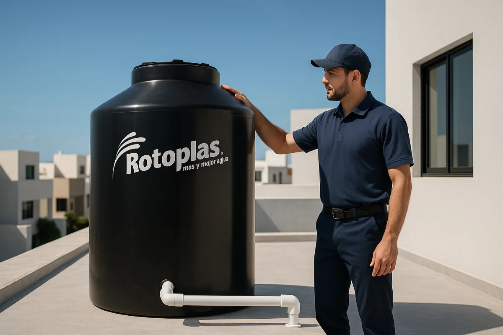
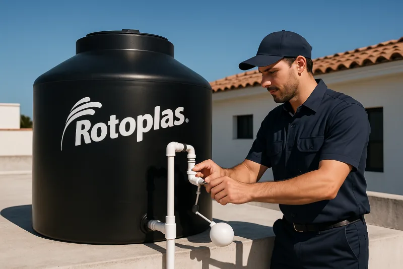

Atendemos La Campiña, El Barrio, Díaz Ordaz, Las Coloradas y todas las colonias rumbo a la salida a Sanalona e Imala. Tinacos, cisternas, fugas y drenajes con garantía escrita, 24/7.
WhatsApp: 52 667 392 2273 · Llamadas: 667 392 2273
Contactar por WhatsAppEl oriente de Culiacán es una de las zonas que más atendemos: desde colonias populares consolidadas como El Barrio y la Gustavo Díaz Ordaz, hasta fraccionamientos campestres como La Campiña y Las Coloradas, rumbo a la salida a Sanalona e Imala. Conocemos su red de agua y los problemas que se repiten casa tras casa, por eso llegamos con la herramienta y el material correctos desde la primera visita.
Trabajamos a diario en el oriente: sabemos dónde falla la presión y qué tuberías dan problemas
Tiempo real de llegada a La Campiña, El Barrio, Díaz Ordaz y colonias cercanas
Emergencias de madrugada, fines de semana y días festivos sin cargos sorpresa
Precio confirmado antes de iniciar y garantía por escrito en cada trabajo
Con la baja presión de la red en el oriente, el tinaco es indispensable. Instalamos base, jarro de aire, flotador y conexiones. Revisa el servicio completo de instalación de tinaco.
Para casas campestres y familias grandes que sufren cortes de agua. Cisterna con bomba e hidroneumático. Conoce la instalación de cisternas.
Drenajes lentos o tapados por grasa, sarro o raíces de árboles maduros. Sonda, hidrojeteado y cámara. Más detalles en destape de drenajes.
Fugas en muros, pisos, llaves de paso y conexiones de tinaco. Detección sin romper de más y reparación el mismo día.
Si vives por La Campiña, Las Coloradas o la Díaz Ordaz, ya lo sabes: la presión de la red municipal baja mucho en las horas pico y los cortes de agua son frecuentes, sobre todo en verano. Entre más te acercas a la salida a Sanalona e Imala, más se siente, porque muchas colonias quedan al final de la línea de distribución.
Por eso casi todas las casas del oriente dependen de un tinaco, y las campestres con jardín amplio suman una cisterna con bomba. Una instalación mal hecha se nota rápido: flotadores que no cierran, bases improvisadas que fracturan el tinaco, bombas que trabajan en seco y se queman. Nosotros instalamos y corregimos estos sistemas todos los días: base nivelada, jarro de aire, flotador de calidad y bomba protegida con control de nivel.
Revisa nuestros servicios de instalación de tinaco y de instalación de cisternas, o mándanos un mensaje y te recomendamos la capacidad adecuada para tu familia.
Cotizar por WhatsAppLas colonias más antiguas del oriente, como El Barrio y los sectores viejos de la Díaz Ordaz, tienen árboles grandes que dan sombra todo el año. La parte mala: esas raíces buscan humedad y se meten en los drenajes por cualquier fisura o junta floja. El resultado es un drenaje que se tapa una y otra vez, gorgoteos en el WC y malos olores en el patio.
Echar químicos no resuelve nada: la raíz sigue ahí. Pasamos primero la cámara de inspección para ubicar el punto exacto, cortamos la raíz con sonda rotativa de cabezal especial y limpiamos la línea completa. Conoce todos los métodos en nuestra página de destape de drenajes en Culiacán.
Para algunas colonias del oriente tenemos página propia con información de servicios, precios y tiempos de llegada específicos:
Cubrimos Las Coloradas, la Gustavo Díaz Ordaz, El Barrio y todas las colonias rumbo a Sanalona e Imala. Consulta el directorio completo de colonias de Culiacán que atendemos o escríbenos directo.
Escribir por WhatsApp
Base nivelada, jarro de aire y flotador de calidad: así debe quedar un tinaco bien instalado
Trabajamos con los mismos precios en toda la ciudad, sin cargo extra por zona. Antes de iniciar revisamos el problema y confirmamos el costo final contigo.
Desde $500 MXN
Fugas en llaves, conexiones, muros o líneas de tinaco. Incluye diagnóstico y garantía.
$500-$3,500 MXN
Desde lavabo o regadera hasta línea principal con máquina. Corte de raíces desde $2,000.
Desde $1,500 MXN
Mano de obra con conexiones, jarro de aire y flotador. El tinaco lo pones tú o lo cotizamos.
Desde $3,000 MXN
Conexión de cisterna con bomba, control de nivel y arranque del sistema.
¿Quieres comparar todos los servicios? Consulta la lista completa de precios de plomería en Culiacán o envíanos foto del problema por WhatsApp para una cotización rápida.
Sí, atendemos toda la zona oriente: La Campiña, El Barrio, Campesina El Barrio, Gustavo Díaz Ordaz, Las Coloradas y las colonias rumbo a la salida a Sanalona e Imala.
Normalmente llegamos en 30-60 minutos según el tráfico y la hora. Trabajamos 24/7 todos los días. Escríbenos al 667 392 2273 y te confirmamos el tiempo de llegada.
Sí, es el servicio más solicitado por la baja presión de la red y los cortes frecuentes. Tinaco desde $1,500 MXN de mano de obra; cisterna con bomba según capacidad y equipo.
Sí. Usamos sonda rotativa con cabezal cortador y cámara de inspección para localizar el punto exacto. El servicio va de $2,000 a $5,000 MXN según la extensión del daño.
Trabajos básicos desde $500 MXN; destape de línea principal desde $1,500 y tinaco desde $1,500 de mano de obra. Confirmamos el precio final antes de iniciar, con garantía por escrito.
Contacta ahora por WhatsApp o teléfono. Servicio el mismo día en La Campiña, El Barrio, Díaz Ordaz, Las Coloradas y alrededores.
Somos plomeros profesionales en Culiacán con más de 15 años de experiencia atendiendo la zona oriente de la ciudad. Conocemos los problemas típicos de la zona —baja presión, cortes de agua, drenajes con raíces— y llevamos el equipo correcto para resolverlos en una sola visita: maquinaria de destape, cámara de inspección y herramienta especializada para tinacos, cisternas y bombas.
Contáctanos por WhatsApp para servicio inmediato en la zona oriente. Cuéntanos tu colonia y el problema, y te damos un estimado de precio y tiempo de llegada.
Enviar mensaje por WhatsApp